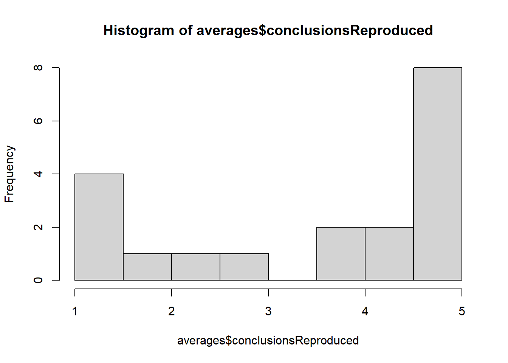
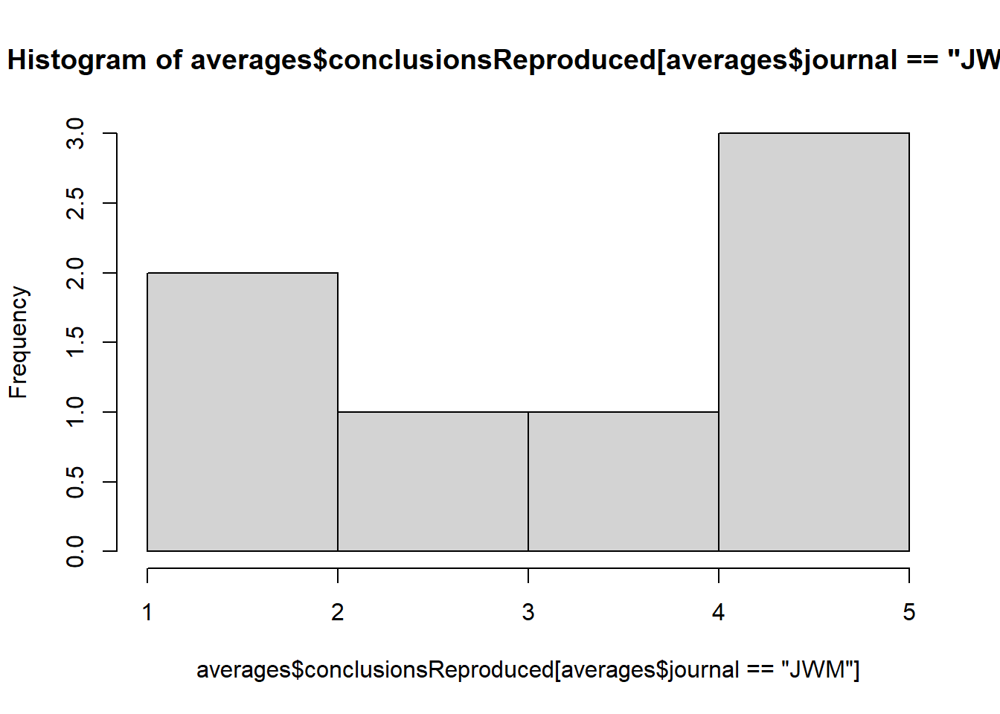
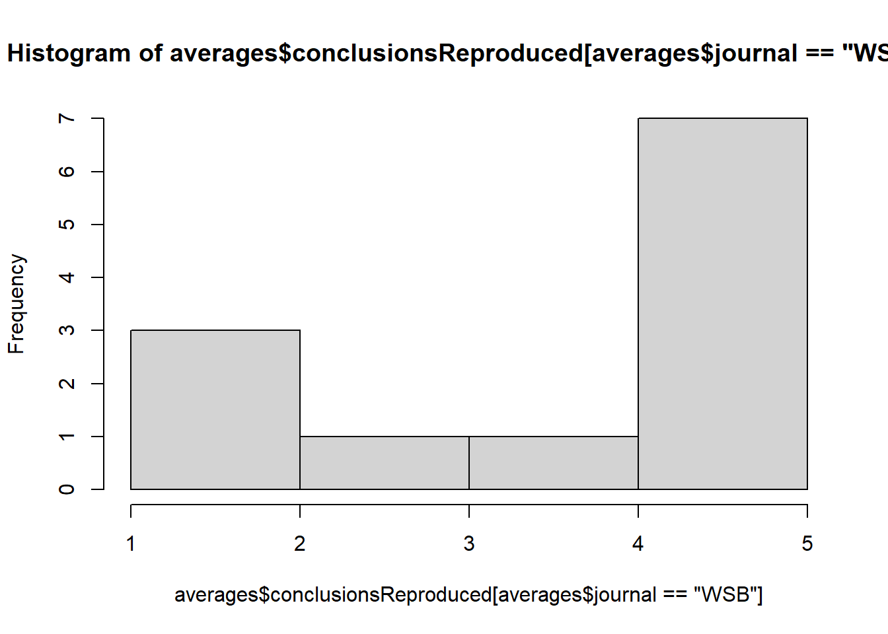

Reproducibility in wildlife ecology
The draft manuscript extended from aaarchmiller/reproducibility_in_wildlife_ecology
1 Summary
Processing data from Google form Description: Takes raw csv file from the Google form and updates it for analysis.
1.1 Coder name(s): Althea ArchMiller
1.1.1 Preamble
# Load libraries
library(ezknitr)
library(knitr)
library(devtools) ## Loading required package: usethisClear environment and set seed
remove(list=ls())
set.seed(2647)
#Load Data
raw_data <- read.csv(file = "./data/google_form_data_raw.csv", stringsAsFactors = F, header = T)
str(raw_data) ## 'data.frame': 101 obs. of 14 variables:
## $ Timestamp : chr "2018/07/25 1:16:00 PM CDT" "2018/07/25 1:18:47 PM CDT" "2018/07/25 2:29:22 PM CDT" "2018/07/25 3:01:47 PM CDT" ...
## $ Study.ID..e.g...wsb002.or.jwm040. : chr "wsb028" "jwm019" "wsb015" "wsb013" ...
## $ Reviewer.s.Initials..yours. : chr "AAA" "ADJ" "KV" "FI" ...
## $ Was.this.paper.suitable.for.review.. : chr "True" "True" "True" "True" ...
## $ Was.this.paper.reviewed.. : chr "" "" "" "" ...
## $ Data.readily.available. : chr "False" "True" "False" "True" ...
## $ Was.the.data.pre.processed.or.shared.in.original.raw.format. : chr "Pre-processed" "Pre-processed" "Pre-processed" "Raw format" ...
## $ Code.available : chr "True" "True" "Not applicable (e.g., not analyzed with code-based software)" "False" ...
## $ Analysis.was.entirely.code.based : chr "True" "True" "False" "False" ...
## $ Open.source.file.formats.used. : chr "True" "True" "False" "False" ...
## $ Can.code.be.run.as.is.. : int 5 4 NA NA 5 NA 4 NA NA NA ...
## $ Were.the.study.s.figures.reproduced.. : int 5 5 3 4 5 3 5 NA NA NA ...
## $ Were.the.numbers.in.the.study.s.tables.and.or.results.text.quantitatively.reproduced..: int 5 4 2 4 5 3 4 NA NA NA ...
## $ Were.the.study.s.conclusions.reproduced.. : int 5 4 4 5 5 4 4 NA NA NA ...## 'data.frame': 101 obs. of 14 variables: ## $ Timestamp : chr "2018/07/25 1:16:00 PM CDT" "2018/07/25 1:18:47 PM CDT" "2018/07/25 2:29:22 PM CDT" "2018/07/25 3:01:47 PM CDT" ... ## $ Study.ID..e.g...wsb002.or.jwm040\. : chr "wsb028" "jwm019" "wsb015" "wsb013" ... ## $ Reviewer.s.Initials..yours. : chr "AAA" "ADJ" "KV" "FI" ... ## $ Was.this.paper.suitable.for.review.. : chr "True" "True" "True" "True" ... ## $ Was.this.paper.reviewed.. : chr "" "" "" "" ... ## $ Data.readily.available. : chr "False" "True" "False" "True" ... ## $ Was.the.data.pre.processed.or.shared.in.original.raw.format. : chr "Pre-processed" "Pre-processed" "Pre-processed" "Raw format" ... ## $ Code.available : chr "True" "True" "Not applicable (e.g., not analyzed with code-based software)" "False" ... ## $ Analysis.was.entirely.code.based : chr "True" "True" "False" "False" ... ## $ Open.source.file.formats.used. : chr "True" "True" "False" "False" ... ## $ Can.code.be.run.as.is.. : int 5 4 NA NA 5 NA 4 NA NA NA ... ## $ Were.the.study.s.figures.reproduced.. : int 5 5 3 4 5 3 5 NA NA NA ... ## $ Were.the.numbers.in.the.study.s.tables.and.or.results.text.quantitatively.reproduced..: int 5 4 2 4 5 3 4 NA NA NA ... ## $ Were.the.study.s.conclusions.reproduced.. : int 5 4 4 5 5 4 4 NA NA NA ... Fill in missing data The question “Was this study reviewed?” was added after a few survey responses were filled in, so I will update those records with “TRUE”
View responses to this column:
table(raw_data$Was.this.paper.reviewed..) ##
##
## 6
## False, author declined to participate (e.g., private data, no time, etc)
## 10
## False, author never responded
## 41
## False, for other reasons not stated above
## 6
## False, unsuitable for review
## 6
## True
## 32## ## ## 6 ## False, author declined to participate (e.g., private data, no time, etc) ## 10 ## False, author never responded ## 41 ## False, for other reasons not stated above ## 6 ## False, unsuitable for review ## 6 ## True ## 32 Replace “” with “True” raw_data$Was.this.paper.reviewed.. <- ifelse( test = raw_data$Was.this.paper.reviewed.. == "", yes = "True", no = raw_data$Was.this.paper.reviewed..) Double check that it worked
table(raw_data$Was.this.paper.reviewed..) ##
##
## 6
## False, author declined to participate (e.g., private data, no time, etc)
## 10
## False, author never responded
## 41
## False, for other reasons not stated above
## 6
## False, unsuitable for review
## 6
## True
## 32## ## False, author declined to participate (e.g., private data, no time, etc)
## 10 ## False, author never responded ## 41 ## False, for other reasons not stated above ## 6 ## False, unsuitable for review ## 6 ## True ## 38 Why weren't studies reviewed? Create and fill out a new column for “Why not reviewed” raw_data$Why.not.reviewed <- NA Fill in with “NA-Was reviewed” for all reviewed studies:
raw_data$Why.not.reviewed[raw_data$Was.this.paper.reviewed..=="True"] <- "NA: Study was reviewed"
# If unsuitable, add this information in:
raw_data$Why.not.reviewed[raw_data$Was.this.paper.reviewed..=="False, unsuitable for review"] <- "Unsuitable for review"
# If author never responded, add this information in:
raw_data$Why.not.reviewed[raw_data$Was.this.paper.reviewed..=="False, author never responded"] <- "No correspondence"
# In two cases, a study was initially thought to be not reviewed but it was. One example of this was jwm027, where the author was slow to respond, but eventually did send us data. This was classified incorrectly in Google form as “False, author never responded.” I need to remove this specific data point.
new_data <- raw_data[!(raw_data$Study.ID..e.g...wsb002.or.jwm040.. == "jwm027" & raw_data$Was.this.paper.reviewed.. == "False, author never responded"),] In the second case, we had to send in a written proposal to a regulatory agency to get the data. We thought that we would not get the proposal accepted, so we thought that we would be unable to review this project. But, in the end, the proposal was accepted and we reviewed this study. I will need to remove the data point that incorrectly files wsb038 as “False, for other reasons not stated above”
new_data <- new_data[!(new_data$Study.ID..e.g...wsb002.or.jwm040.. == "wsb038" & new_data$Was.this.paper.reviewed.. == "False, for other reasons not stated above"),]
#Track down reasons for “False, author declined to participate…” What studies was this true for? new_data$Study.ID..e.g...wsb002.or.jwm040.[new_data$Was.this.paper.reviewed.. == "False, author declined to participate (e.g., private data, no time, etc)"] ## [1] "jwm003" "jwm005" "jwm011" "jwm016" "jwm031" "wsb001" "wsb005" ## [8] "wsb039" "wsb037" "jwm036" I want to classify responses: jwm003: proprietary/confidential data jwm005: no reason given, just declined to participate jwm011: not enough time to prepare data jwm016: future articles on same data jwm031: no reason given, just declined to participate wsb001: proprietary/confidential data wsb005: not enough time to prepare data wsb039: proprietary/confidential data wsb037: proprietary/confidential data, noteably, author states the study is not reproducible jwm036: not enough time to prepare data, noteably, author states the study is not reproducible new_data$Why.not.reviewed <- ifelse(test = new_data$Study.ID..e.g...wsb002.or.jwm040\. == "jwm003" | new_data$Study.ID..e.g...wsb002.or.jwm040\. == "wsb039" | new_data$Study.ID..e.g...wsb002.or.jwm040\. == "wsb037" | new_data$Study.ID..e.g...wsb002.or.jwm040\. == "wsb001", yes = "Author Declined: Proprietary/confidential data", no = ifelse(test = new_data$Study.ID..e.g...wsb002.or.jwm040\. == "jwm005" | new_data$Study.ID..e.g...wsb002.or.jwm040\. == "jwm031", yes = "Author Declined: No reason given", no = ifelse(test = new_data$Study.ID..e.g...wsb002.or.jwm040\. == "jwm011" | new_data$Study.ID..e.g...wsb002.or.jwm040\. == "wsb005" | new_data$Study.ID..e.g...wsb002.or.jwm040\. == "jwm036", yes = "Author Declined: Not enough time", no = ifelse(test = new_data$Study.ID..e.g...wsb002.or.jwm040\. == "jwm016", yes = "Author Declined: Data saved for future article", no = new_data$Why.not.reviewed)) )) Track down reasons for “False, for other reasons not stated above” What studies was this true for? new_data$Study.ID..e.g...wsb002.or.jwm040.[new_data$Was.this.paper.reviewed.. == "False, for other reasons not stated above"] ## [1] "wsb020" "wsb029" "wsb007" "wsb027" "jwm038" Classify reasons: wsb020: unable to contact primary investigator, but co-author informed us also proprietary/confidential data wsb029: did not hear back from author, incorrectly coded: should have been “No correspondence” wsb007: author wanted to participate, but did not send data in time wsb027: author wanted to participate, but did not send data in time jwm038: unable to find email for author, incorrectly coded: Should have been “No correspondence” new_data$Why.not.reviewed <- ifelse(test = new_data$Study.ID..e.g...wsb002.or.jwm040\. == "wsb020", yes = "Author Declined: Proprietary/confidential data", no = ifelse(test = new_data$Study.ID..e.g...wsb002.or.jwm040\. == "wsb029" | new_data$Study.ID..e.g...wsb002.or.jwm040\. == "jwm038", yes = "No correspondence", no = ifelse(test = new_data$Study.ID..e.g...wsb002.or.jwm040\. == "wsb007" | new_data$Study.ID..e.g...wsb002.or.jwm040\. == "wsb027", yes = "Author wanted to participate, but did not send data", no = new_data$Why.not.reviewed))) Look at results table(new_data$Why.not.reviewed) ## ## Author Declined: Data saved for future article ## 1 ## Author Declined: No reason given ## 2 ## Author Declined: Not enough time ## 3 ## Author Declined: Proprietary/confidential data ## 5 ## Author wanted to participate, but did not send data ## 2 ## NA: Study was reviewed ## 38 ## No correspondence ## 42 ## Unsuitable for review ## 6 sum(table(new_data$Why.not.reviewed)) ## [1] 99 Add in journal column new_data$journal[grep("jwm", x = new_data$Study.ID..e.g...wsb002.or.jwm040.)] <- "JWM" new_data$journal[grep("wsb", x = new_data$Study.ID..e.g...wsb002.or.jwm040.)] <- "WSB" table(new_data$journal) ## ## JWM WSB ## 47 52 Summarize results for studies that were reviewed There were two reviewers for each reviewed study: table(new_data$Study.ID..e.g...wsb002.or.jwm040.[new_data$Was.this.paper.reviewed..=="True"]) ## ## jwm004 jwm010 jwm019 jwm022 jwm024 jwm027 jwm028 wsb004 wsb006 wsb008 ## 2 2 2 2 2 2 2 2 2 2 ## wsb010 wsb013 wsb014 wsb015 wsb018 wsb023 wsb028 wsb035 wsb038 ## 2 2 2 2 2 2 2 2 2 So, we need to average the scores to the questions: “Were.the.study.s.figures.reproduced..” “Were.the.numbers.in.the.study.s.tables.and.or.results.text.quantitatively.reproduced..” “Were.the.study.s.conclusions.reproduced..” Subset data to reviewed studies only and check for missing data, where there should be data: reviewed_data <- new_data[new_data$Was.this.paper.reviewed..=="True",] summary(reviewed_data$Were.the.study.s.figures.reproduced..) ## Min. 1st Qu. Median Mean 3rd Qu. Max. NA's ## 1.000 1.750 4.000 3.361 5.000 5.000 2 summary(reviewed_data$Were.the.numbers.in.the.study.s.tables.and.or.results.text.quantitatively.reproduced..) ## Min. 1st Qu. Median Mean 3rd Qu. Max. NA's ## 1.000 2.000 4.000 3.297 4.000 5.000 1 summary(reviewed_data$Were.the.study.s.conclusions.reproduced..) ## Min. 1st Qu. Median Mean 3rd Qu. Max. NA's ## 1.000 3.000 4.000 3.703 5.000 5.000 1 For one of these studies with NAs, there were no figures, so I will replace with a “99” reviewed_data$Were.the.study.s.figures.reproduced..[reviewed_data$Study.ID..e.g...wsb002.or.jwm040\. == "wsb018"] <- 99 For another of these studies, the study was completely unreproducible, so the reviewer erroneously didn't answer these questions. These should have been “1s” reviewed_data$Were.the.study.s.figures.reproduced..[reviewed_data$Study.ID..e.g...wsb002.or.jwm040\. == "wsb008"] <- 1 reviewed_data$Were.the.numbers.in.the.study.s.tables.and.or.results.text.quantitatively.reproduced..[ reviewed_data$Study.ID..e.g...wsb002.or.jwm040\. == "wsb008"] <- 1 reviewed_data$Were.the.study.s.conclusions.reproduced..[reviewed_data$Study.ID..e.g...wsb002.or.jwm040\. == "wsb008"] <- 1 Summarize information by reviewed study with a for-loop study_names <- unique(reviewed_data$Study.ID..e.g...wsb002.or.jwm040.) for(ss in 1:length(study_names)){ subsetdata <- reviewed_data[reviewed_data$Study.ID..e.g...wsb002.or.jwm040.==study_names[ss],] # Check for disagreements amongst answers if(length(unique(subsetdata[,"Data.readily.available."]))>=2){ print(paste(study_names[ss], "error: data readily available")) } if(length(unique(subsetdata[,"Was.the.data.pre.processed.or.shared.in.original.raw.format." ]))>=2){ print(paste(study_names[ss], "error: was data pre processed")) } if(length(unique(subsetdata[,"Code.available" ]))>=2){ print(paste(study_names[ss], "error: code available")) } if(length(unique(subsetdata[,"Analysis.was.entirely.code.based" ]))>=2){ print(paste(study_names[ss], "error: was analysis code based")) } if(length(unique(subsetdata[,"Can.code.be.run.as.is.." ]))>=2){ print(paste(study_names[ss], "error: Can.code.be.run.as.is..")) } if(length(unique(subsetdata[,"Open.source.file.formats.used." ]))>=2){ print(paste(study_names[ss], "error: open source formats")) } } ## [1] "wsb028 error: data readily available" ## [1] "jwm019 error: open source formats" ## [1] "wsb013 error: code available" ## [1] "wsb013 error: open source formats" ## [1] "wsb035 error: data readily available" ## [1] "wsb035 error: was analysis code based" ## [1] "wsb004 error: was data pre processed" ## [1] "jwm010 error: was data pre processed" ## [1] "jwm010 error: was analysis code based" ## [1] "jwm010 error: Can.code.be.run.as.is.." ## [1] "wsb018 error: data readily available" ## [1] "wsb018 error: open source formats" ## [1] "wsb006 error: data readily available" ## [1] "wsb006 error: was data pre processed" ## [1] "wsb006 error: was analysis code based" ## [1] "wsb006 error: Can.code.be.run.as.is.." ## [1] "wsb006 error: open source formats" ## [1] "wsb023 error: was analysis code based" ## [1] "wsb010 error: was data pre processed" ## [1] "wsb010 error: Can.code.be.run.as.is.." ## [1] "wsb010 error: open source formats" ## [1] "wsb014 error: data readily available" ## [1] "wsb014 error: code available" ## [1] "wsb014 error: open source formats" ## [1] "jwm022 error: data readily available" ## [1] "jwm022 error: was data pre processed" ## [1] "jwm022 error: code available" ## [1] "jwm022 error: Can.code.be.run.as.is.." ## [1] "wsb008 error: data readily available" ## [1] "wsb008 error: code available" ## [1] "wsb008 error: Can.code.be.run.as.is.." ## [1] "jwm024 error: was analysis code based" ## [1] "jwm024 error: Can.code.be.run.as.is.." ## [1] "jwm028 error: was data pre processed" ## [1] "jwm028 error: was analysis code based" ## [1] "jwm028 error: Can.code.be.run.as.is.." ## [1] "jwm004 error: open source formats" ## [1] "wsb038 error: Can.code.be.run.as.is.." ## [1] "jwm027 error: open source formats" Fix anomolies listed above: Data was readily available Data was sent by author so “was data readily available” should be “False” True for: wsb028, wsb018, wsb006, wsb014, wsb008 Data was available in paper, so “was data readily available” should be “True” True for: wsb035, jwm022 reviewed_data$Data.readily.available. <- ifelse( test = reviewed_data$Study.ID..e.g...wsb002.or.jwm040\. == "wsb028" | reviewed_data$Study.ID..e.g...wsb002.or.jwm040\. == "wsb018" | reviewed_data$Study.ID..e.g...wsb002.or.jwm040\. == "wsb006" | reviewed_data$Study.ID..e.g...wsb002.or.jwm040\. == "wsb014" | reviewed_data$Study.ID..e.g...wsb002.or.jwm040\. == "wsb008", yes = "False", no = ifelse( test = reviewed_data$Study.ID..e.g...wsb002.or.jwm040\. == "wsb035" | reviewed_data$Study.ID..e.g...wsb002.or.jwm040\. == "jwm022", yes = "True", no = reviewed_data$Data.readily.available. ) ) Was code available? For jwm022 and wsb008, code actually was available For wsb013 and wsb014, analysis was not code-based so should be “Not applicable..” reviewed_data$Code.available <- ifelse( test = reviewed_data$Study.ID..e.g...wsb002.or.jwm040\. == "jwm022" | reviewed_data$Study.ID..e.g...wsb002.or.jwm040\. == "wsb008", yes = "True", no = ifelse( test = reviewed_data$Study.ID..e.g...wsb002.or.jwm040\. == "wsb013" | reviewed_data$Study.ID..e.g...wsb002.or.jwm040\. == "wsb014", yes = "Not applicable (e.g., not analyzed with code-based software)", no = reviewed_data$Code.available )) Analysis was entirely code based Actually true for wsb035, jwm010, wsb006, wsb023, jwm024 and jwm028 reviewed_data$Analysis.was.entirely.code.based <- ifelse( test = reviewed_data$Study.ID..e.g...wsb002.or.jwm040\. == "wsb035" | reviewed_data$Study.ID..e.g...wsb002.or.jwm040\. == "jwm010" | reviewed_data$Study.ID..e.g...wsb002.or.jwm040\. == "wsb006" | reviewed_data$Study.ID..e.g...wsb002.or.jwm040\. == "wsb023" | reviewed_data$Study.ID..e.g...wsb002.or.jwm040\. == "jwm024" | reviewed_data$Study.ID..e.g...wsb002.or.jwm040\. == "jwm028", yes = "True", no = reviewed_data$Analysis.was.entirely.code.based) Data was pre-processed True for wsb004 and wsb010, but raw data for jwm010, wsb006, jwm022 reviewed_data$Was.the.data.pre.processed.or.shared.in.original.raw.format. <- ifelse( test = reviewed_data$Study.ID..e.g...wsb002.or.jwm040\. == "wsb004" | reviewed_data$Study.ID..e.g...wsb002.or.jwm040\. == "wsb010" | reviewed_data$Study.ID..e.g...wsb002.or.jwm040\. == "jwm028", yes = "Pre-processed", no = ifelse( test = reviewed_data$Study.ID..e.g...wsb002.or.jwm040\. == "jwm010" | reviewed_data$Study.ID..e.g...wsb002.or.jwm040\. == "wsb006" | reviewed_data$Study.ID..e.g...wsb002.or.jwm040\. == "jwm022", yes = "Raw format", no = reviewed_data$Was.the.data.pre.processed.or.shared.in.original.raw.format. )) Can code be run as is? Make sure this is “NA” for studies without code provided reviewed_data$Can.code.be.run.as.is..[reviewed_data$Code.available=="False"] <- NA For jwm022, the code could be run as-is, but this was mistakenly not completed on survey: reviewed_data$Can.code.be.run.as.is..[reviewed_data$Study.ID..e.g...wsb002.or.jwm040.=="jwm022"] <- 5 The rest are just from where there are slight ranking changes between both reviewers, so they'll be averaged out in the next step Update whether open source formats were used Studies jwm019, wsb006, wsb010, wsb014, jwm027 used open source formats like csv, R, unmarked, etc. Studies wsb013, wsb018, jwm004 used proprietary formats like JMP, ArcGIS, and Excel open <- c("jwm019", "wsb006", "wsb010", "wsb014", "jwm027") proprietary <- c("wsb013", "wsb018", "jwm004") Update discrepancies reviewed_data$Open.source.file.formats.used.[reviewed_data$Study.ID..e.g...wsb002.or.jwm040\. %in% open] <- "True" reviewed_data$Open.source.file.formats.used.[reviewed_data$Study.ID..e.g...wsb002.or.jwm040\. %in% proprietary] <- "False" Average numerical results and simultaneously check for errors New dataset for averaged data averages <- as.data.frame(matrix(NA, ncol = 6, nrow = length(study_names))) colnames(averages) <- c("studyID", "graphsReproduced", "numbersReproduced", "conclusionsReproduced", "codeRunsAsIs", "journal") for(ss in 1:length(study_names)){ subsetdata <- reviewed_data[reviewed_data$Study.ID..e.g...wsb002.or.jwm040.==study_names[ss],] # Check for disagreements amongst answers if(length(unique(subsetdata[,"Data.readily.available."]))>=2){ print(paste(study_names[ss], "error: data readily available")) } if(length(unique(subsetdata[,"Was.the.data.pre.processed.or.shared.in.original.raw.format." ]))>=2){ print(paste(study_names[ss], "error: was data pre processed")) } if(length(unique(subsetdata[,"Code.available" ]))>=2){ print(paste(study_names[ss], "error: code available")) } if(length(unique(subsetdata[,"Analysis.was.entirely.code.based" ]))>=2){ print(paste(study_names[ss], "error: was analysis code based")) } # Average over numerical responses averages$studyID[ss] <- study_names[ss] averages$graphsReproduced[ss] <- ifelse(study_names[ss] == "wsb018", yes = NA, no = mean(subsetdata$Were.the.study.s.figures.reproduced.., na.rm = T)) averages$numbersReproduced[ss] <- mean(subsetdata$Were.the.numbers.in.the.study.s.tables.and.or.results.text.quantitatively.reproduced..) averages$conclusionsReproduced[ss] <- mean(subsetdata$Were.the.study.s.conclusions.reproduced..) averages$codeRunsAsIs[ss] <- mean(subsetdata$Can.code.be.run.as.is..) averages$journal[ss] <- subsetdata$journal[1] averages$dataAvailable[ss] <- subsetdata$Data.readily.available.[1] averages$preProcessed[ss] <- subsetdata$Was.the.data.pre.processed.or.shared.in.original.raw.format.[1] averages$codeBased[ss] <- subsetdata$Analysis.was.entirely.code.based[1] averages$codeAvailable[ss] <- subsetdata$Code.available[1] averages$openSource[ss] <- subsetdata$Open.source.file.formats.used.[1] } Do results look right? summary(averages) ## studyID graphsReproduced numbersReproduced ## Length:19 Min. :1.000 Min. :1.000 ## Class :character 1st Qu.:1.750 1st Qu.:2.000 ## Mode :character Median :3.500 Median :4.000 ## Mean :3.278 Mean :3.237 ## 3rd Qu.:4.875 3rd Qu.:4.000 ## Max. :5.000 Max. :5.000 ## NA's :1 ## conclusionsReproduced codeRunsAsIs journal ## Min. :1.000 Min. :2.000 Length:19 ## 1st Qu.:2.250 1st Qu.:3.000 Class :character ## Median :4.500 Median :3.750 Mode :character ## Mean :3.632 Mean :3.650 ## 3rd Qu.:5.000 3rd Qu.:4.375 ## Max. :5.000 Max. :5.000 ## NA's :9 ## dataAvailable preProcessed codeBased ## Length:19 Length:19 Length:19 ## Class :character Class :character Class :character ## Mode :character Mode :character Mode :character ## ## ## ## ## codeAvailable openSource ## Length:19 Length:19 ## Class :character Class :character ## Mode :character Mode :character ## ## ## ## If it was not code based, then codeAvailable should equal NA averages$codeAvailable[averages$codeBased=="False"] <- NA For wsb035, there are a few categories that do not apply, because it was a primarily simulated dataset, so they'll be converted to NA averages$openSource[averages$studyID=="wsb035"] <- NA averages$preProcessed[averages$studyID=="wsb035"] <- NA averages$dataAvailable[averages$studyID=="wsb035"] <- NA averages$codeBased[averages$studyID=="wsb035"] <- NA Save Data save(averages, file = "data/processed_data/averages_of_reviewed_studies.Rdata") save(reviewed_data, file = "data/processed_data/reviewed_studies_data.Rdata") save(new_data, file = "data/processed_data/all_studies_data.Rdata") Footer devtools::session_info() ## Session info ------------------------------------------------------------- ## setting value ## version R version 3.3.2 (2016-10-31) ## system x86_64, darwin13.4.0 ## ui RStudio (1.0.143) ## language (EN) ## collate en_US.UTF-8 ## tz <na>## date 2019-02-22 ## Packages ----------------------------------------------------------------- ## package * version date source ## base * 3.3.2 2016-10-31 local ## datasets * 3.3.2 2016-10-31 local ## devtools * 1.13.3 2017-08-02 CRAN (R 3.3.2) ## digest 0.6.12 2017-01-27 CRAN (R 3.3.2) ## evaluate 0.10.1 2017-06-24 CRAN (R 3.3.2) ## ezknitr * 0.6 2016-09-16 CRAN (R 3.3.0) ## graphics * 3.3.2 2016-10-31 local ## grDevices * 3.3.2 2016-10-31 local ## highr 0.6 2016-05-09 CRAN (R 3.3.0) ## knitr * 1.17 2017-08-10 CRAN (R 3.3.2) ## magrittr 1.5 2014-11-22 CRAN (R 3.3.0) ## markdown 0.8 2017-04-20 CRAN (R 3.3.2) ## memoise 1.1.0 2017-04-21 CRAN (R 3.3.2) ## methods * 3.3.2 2016-10-31 local ## mime 0.5 2016-07-07 CRAN (R 3.3.0) ## R.methodsS3 1.7.1 2016-02-16 CRAN (R 3.3.0) ## R.oo 1.21.0 2016-11-01 CRAN (R 3.3.0) ## R.utils 2.5.0 2016-11-07 CRAN (R 3.3.0) ## rstudioapi 0.7 2017-09-07 CRAN (R 3.3.2) ## stats * 3.3.2 2016-10-31 local ## stringi 1.1.5 2017-04-07 CRAN (R 3.3.2) ## stringr 1.2.0 2017-02-18 CRAN (R 3.3.2) ## tools 3.3.2 2016-10-31 local ## utils * 3.3.2 2016-10-31 local ## withr 2.0.0 2017-07-28 CRAN (R 3.3.2) spun with: ezknitr::ezspin(file = “programs/01_data_processing.R”, keep_md = FALSE, out_dir = “html_reports”, fig_dir = “figures”)</na>This is an extension of the manuscript I found on github a while back and now have more bookdown skills to add some more notes.
Future update checks can be done by checking the github reprository: aaarchmiller/reproducibility_in_wildlife_ecology
1.2 Overview
Why is this important….
- SSM modelling issues (secrets thing…)
- errors in life history structures are common (paper now)
- reproducibility is very important (SCIENCE CRISIS)
- predator free nz 2050
- community groups are given concepts not details…. CEO etc relationship?
A literature review….
- Hard to start
- But as a computational workflow it is valueable to build
- very small collection of key points….
- figures of concepts
- To find out key words…
diagrammR
Survey…
- extend from paper here…
- already have draft suvery
- email and ask??
1.3 Method
Lit review
- collect all literature
- Using this collection of keywords
1.4 Study overview
source("programs/02_study_overview_figure.R")## Loading required package: lattice## Loading required package: survival## Loading required package: Formula## Loading required package: ggplot2##
## Attaching package: 'Hmisc'## The following objects are masked from 'package:base':
##
## format.pval, units
1.5 Scores
source("programs/03_scores_by_journal_figure.R")1.6 Criteria
source("programs/04_reproducibility_criteria_figure.R")## Score SD upper lower Category
## 1 3.200000 1.8234583 5.023458 1.3765417 Figures reproduced
## 2 3.166667 1.5275252 4.694192 1.6391414 Figures reproduced
## 3 3.100000 1.2449900 4.344990 1.8550100 Numbers reproduced
## 4 3.153846 1.5053324 4.659179 1.6485138 Numbers reproduced
## 5 3.500000 1.6583124 5.158312 1.8416876 Conclusions reproduced
## 6 3.576923 1.6689087 5.245832 1.9080143 Conclusions reproduced
## 7 3.800000 1.3509256 5.150926 2.4490744 Figures reproduced
## 8 2.916667 1.6213537 4.538020 1.2953129 Figures reproduced
## 9 3.750000 0.8803408 4.630341 2.8696592 Numbers reproduced
## 10 2.833333 1.5423320 4.375665 1.2910014 Numbers reproduced
## 11 4.333333 1.4023789 5.735712 2.9309544 Conclusions reproduced
## 12 3.166667 1.6283474 4.795014 1.5383193 Conclusions reproduced
## 13 3.227273 1.7372915 4.964564 1.4899812 Figures reproduced
## 14 3.083333 1.3197222 4.403056 1.7636111 Figures reproduced
## 15 3.136364 1.6138604 4.750224 1.5225032 Numbers reproduced
## 16 3.142857 1.1073349 4.250192 2.0355223 Numbers reproduced
## 17 3.272727 1.8078113 5.080539 1.4649159 Conclusions reproduced
## 18 4.000000 1.2583057 5.258306 2.7416943 Conclusions reproduced
## 19 3.666667 1.6007811 5.267448 2.0658856 Figures reproduced
## 20 2.500000 2.1794495 4.679449 0.3205505 Figures reproduced
## 21 3.500000 1.5411035 5.041104 1.9588965 Numbers reproduced
## 22 2.666667 2.0816660 4.748333 0.5850007 Numbers reproduced
## 23 3.722222 1.6791201 5.401342 2.0431021 Conclusions reproduced
## 24 2.500000 2.1794495 4.679449 0.3205505 Conclusions reproduced
## 25 3.444444 1.5500896 4.994534 1.8943548 Figures reproduced
## 26 2.875000 1.6201852 4.495185 1.2548148 Figures reproduced
## 27 3.333333 1.4142136 4.747547 1.9191198 Numbers reproduced
## 28 2.944444 1.4457793 4.390224 1.4986651 Numbers reproduced
## 29 3.444444 1.5092309 4.953675 1.9352136 Conclusions reproduced
## 30 3.666667 1.8027756 5.469442 1.8638910 Conclusions reproduced
## Question Response n
## 1 Q5: Data available? Yes 5
## 2 Q5: Data available? No 12
## 3 Q5: Data available? Yes 5
## 4 Q5: Data available? No 13
## 5 Q5: Data available? Yes 5
## 6 Q5: Data available? No 13
## 7 Q6: Raw data? Yes 5
## 8 Q6: Raw data? No 12
## 9 Q6: Raw data? Yes 6
## 10 Q6: Raw data? No 12
## 11 Q6: Raw data? Yes 6
## 12 Q6: Raw data? No 12
## 13 Q8: Code based? Yes 11
## 14 Q8: Code based? No 6
## 15 Q8: Code based? Yes 11
## 16 Q8: Code based? No 7
## 17 Q8: Code based? Yes 11
## 18 Q8: Code based? No 7
## 19 Q7: Code available? Yes 9
## 20 Q7: Code available? No 3
## 21 Q7: Code available? Yes 9
## 22 Q7: Code available? No 3
## 23 Q7: Code available? Yes 9
## 24 Q7: Code available? No 3
## 25 Q9: Open source? Yes 9
## 26 Q9: Open source? No 8
## 27 Q9: Open source? Yes 9
## 28 Q9: Open source? No 9
## 29 Q9: Open source? Yes 9
## 30 Q9: Open source? No 91.7 Overall scripts
# source("programs/")Gerenal visualz and patterns NZ? global?
image-20191202103427895
1.8 Statistical analysis
a <- list.files("programs/")
a## [1] "01_data_processing.R"
## [2] "02_study_overview_figure.R"
## [3] "03_scores_by_journal_figure.R"
## [4] "04_reproducibility_criteria_figure.R"
## [5] "R_scripts.zip"#added here package to help with file locations
source("programs/01_data_processing.R")## here() starts at C:/Code/reproducibility_in_wildlife_ecology## 'data.frame': 101 obs. of 14 variables:
## $ Timestamp : chr "2018/07/25 1:16:00 PM CDT" "2018/07/25 1:18:47 PM CDT" "2018/07/25 2:29:22 PM CDT" "2018/07/25 3:01:47 PM CDT" ...
## $ Study.ID..e.g...wsb002.or.jwm040. : chr "wsb028" "jwm019" "wsb015" "wsb013" ...
## $ Reviewer.s.Initials..yours. : chr "AAA" "ADJ" "KV" "FI" ...
## $ Was.this.paper.suitable.for.review.. : chr "True" "True" "True" "True" ...
## $ Was.this.paper.reviewed.. : chr "" "" "" "" ...
## $ Data.readily.available. : chr "False" "True" "False" "True" ...
## $ Was.the.data.pre.processed.or.shared.in.original.raw.format. : chr "Pre-processed" "Pre-processed" "Pre-processed" "Raw format" ...
## $ Code.available : chr "True" "True" "Not applicable (e.g., not analyzed with code-based software)" "False" ...
## $ Analysis.was.entirely.code.based : chr "True" "True" "False" "False" ...
## $ Open.source.file.formats.used. : chr "True" "True" "False" "False" ...
## $ Can.code.be.run.as.is.. : int 5 4 NA NA 5 NA 4 NA NA NA ...
## $ Were.the.study.s.figures.reproduced.. : int 5 5 3 4 5 3 5 NA NA NA ...
## $ Were.the.numbers.in.the.study.s.tables.and.or.results.text.quantitatively.reproduced..: int 5 4 2 4 5 3 4 NA NA NA ...
## $ Were.the.study.s.conclusions.reproduced.. : int 5 4 4 5 5 4 4 NA NA NA ...
## [1] "wsb028 error: data readily available"
## [1] "jwm019 error: open source formats"
## [1] "wsb013 error: code available"
## [1] "wsb013 error: open source formats"
## [1] "wsb035 error: data readily available"
## [1] "wsb035 error: was analysis code based"
## [1] "wsb004 error: was data pre processed"
## [1] "jwm010 error: was data pre processed"
## [1] "jwm010 error: was analysis code based"
## [1] "jwm010 error: Can.code.be.run.as.is.."
## [1] "wsb018 error: data readily available"
## [1] "wsb018 error: open source formats"
## [1] "wsb006 error: data readily available"
## [1] "wsb006 error: was data pre processed"
## [1] "wsb006 error: was analysis code based"
## [1] "wsb006 error: Can.code.be.run.as.is.."
## [1] "wsb006 error: open source formats"
## [1] "wsb023 error: was analysis code based"
## [1] "wsb010 error: was data pre processed"
## [1] "wsb010 error: Can.code.be.run.as.is.."
## [1] "wsb010 error: open source formats"
## [1] "wsb014 error: data readily available"
## [1] "wsb014 error: code available"
## [1] "wsb014 error: open source formats"
## [1] "jwm022 error: data readily available"
## [1] "jwm022 error: was data pre processed"
## [1] "jwm022 error: code available"
## [1] "jwm022 error: Can.code.be.run.as.is.."
## [1] "wsb008 error: data readily available"
## [1] "wsb008 error: code available"
## [1] "wsb008 error: Can.code.be.run.as.is.."
## [1] "jwm024 error: was analysis code based"
## [1] "jwm024 error: Can.code.be.run.as.is.."
## [1] "jwm028 error: was data pre processed"
## [1] "jwm028 error: was analysis code based"
## [1] "jwm028 error: Can.code.be.run.as.is.."
## [1] "jwm004 error: open source formats"
## [1] "wsb038 error: Can.code.be.run.as.is.."
## [1] "jwm027 error: open source formats"Survey?
1.9 Results
1.10 Discussion
Need to just find and extract images from PDF….
Time and increase in diagram structure…